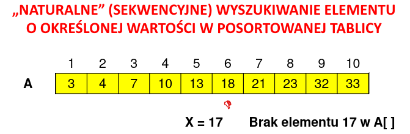

Krótki opis:
Przeszukiwanie liniowe (Linear search) – najprostszy algorytm wyszukiwania informacji w ciągu danych, np. zapisanych w tablicy lub na liście.
Polega na porównywaniu żądanego klucza z kolejnymi kluczami z sekwencji danych – wyszukiwanie kończy się powodzeniem,gdy zostanie znaleziony klucz,
albo niepowodzeniem, gdy zostaną przejrzane wszystkie klucze.
Liczba koniecznych porównań zależy wprost od położenia szukanego elementu w sekwencji danych – wynosi od 1 do n,
gdzie n to całkowita liczba elementów. Algorytm ma złożoność O(n) .
Wyszukiwanie liniowe może być jedynym sposobem wyszukiwania, gdy nie wiadomo niczego na temat kolejności kluczy.
Dla dużej liczby danych algorytm jest bardzo nieefektywny, jednak gdy danych jest względnie mało, jest z powodzeniem stosowany
Szczególny opis:
Tablica A[ ] zawiera elementy o wartościach należących do pewnego skończonego zbioru o mocy mniejszej, większej albo równej liczbie pozycji w tej tablicy.
Dla dwóch elementów o różnych wartościach możliwe jest wyłącznie stwierdzenie, że są one identyczne albo różne.
Tablica A[ ] zawiera elementy o wartościach należących do pewnego skończonego zbioru o mocy mniejszej, większej albo równej liczbie pozycji w tej tablicy.
Zadanie polega na odnalezieniu w tej tablicy elementu zgodnego co do wartości z przedstawionym wzorcem.

Operacja dominująca: porównanie elementu w tablicy z poszukiwanym wzorcem.

Załóżmy, że prawdopodobieństwo porażki jest pomijalne, zaś prawdopodobieństwo odnalezienia poszukiwanego wzorca na każdej z N pozycji jest jednakowe

